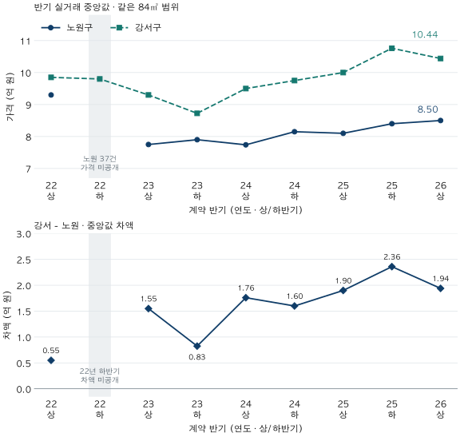

다음 집으로 가는 비용 · 가격 차액과 자금
갈아타기 차액이 줄면 필요한 현금도 줄어들까?
노원·강서 84㎡ 실거래의 반기별 중앙값 차이를 비교합니다. 표본 부족 구간은 비공개로 남기고, 기존 대출·새 대출·부대비용을 넣은 가상 예시로 가격 차액과 실제 추가 현금을 구분합니다.
분석 기간 · 2022년 상반기~2026년 상반기 계약 | 자료 기준일 · 2026-10-04
다음 집과 지금 집의 가격 차이가 줄었다면, 갈아타기에 필요한 현금도 줄었을까요? 가격 차액에 기존 대출 상환액과 새 대출, 거래 비용을 더해 봐야 합니다. 노원·강서의 같은 면적 실거래 중앙값 차이를 반기별로 살펴보고, 실제 자금 계산은 별도의 가상 예시로 풀어봅니다.
‘상급지’ 대신 비교할 두 대상을 먼저 정합니다
이번 비교의 기준은 노원, 상대는 강서입니다. 앞선 시리즈에서 선택한 두 지역을 그대로 사용하며, 두 구의 주거 만족도나 급지를 서열화하지 않습니다. 이동 방향을 뒤집으면 차액의 부호도 바뀝니다. 계산은 강서 중앙값−노원 중앙값, 가격 차이율은 (강서÷노원 −1)×100입니다.
면적은 두 곳 모두 전용 84.00~84.99㎡의 84㎡대로 맞춥니다. 이 블로그의 표준 84형(전용 25·26평형)보다 좁은 범위이며(용어집), 공급면적의 ‘몇 평’이나 같은 평면을 뜻하지도 않습니다. 2022년 상반기부터 2026년 상반기까지 아홉 반기를 사전에 고정했습니다. 해제·직거래를 식별할 수 있는 시기 안에서 같은 정제 기준을 적용하기 위해 2022년부터 시작합니다.
각 가격은 그 반기에 거래된 주택의 중앙값입니다. 같은 주택 재고를 고정해 평가한 가격이나 현재 호가가 아닙니다. 같은 구와 면적 안에서도 연식·동네·층·거래 단지와 비중이 달라질 수 있습니다.
갈아타기 가격 차액은 얼마나 달라졌나요?

| 계약 반기 | 노원 건수 | 노원 중앙값 | 강서 건수 | 강서 중앙값 | 강서−노원 | 차이율 |
|---|---|---|---|---|---|---|
| 2022년 상반기 | 71 | 9.30 | 76 | 9.85 | 0.55 | 5.91% |
| 2022년 하반기 | 37 | 가격 미공개 | 41 | 9.80 | 차액 미공개 | 미공개 |
| 2023년 상반기 | 191 | 7.75 | 265 | 9.30 | 1.55 | 20.00% |
| 2023년 하반기 | 227 | 7.90 | 228 | 8.73 | 0.83 | 10.44% |
| 2024년 상반기 | 326 | 7.74 | 399 | 9.50 | 1.76 | 22.74% |
| 2024년 하반기 | 442 | 8.15 | 390 | 9.75 | 1.60 | 19.63% |
| 2025년 상반기 | 469 | 8.10 | 555 | 10.00 | 1.90 | 23.46% |
| 2025년 하반기 | 466 | 8.40 | 630 | 10.76 | 2.36 | 28.10% |
| 2026년 상반기 | 802 | 8.50 | 726 | 10.44 | 1.94 | 22.82% |
2022년 하반기의 차액은 비공개입니다. 노원은 37건으로 사전 가격 공개 기준 40건에 못 미쳤습니다. 강서 41건의 가격이 있어도 한쪽이 부족하므로 차액을 계산해 공개하지 않습니다. 0원 차이로 바꾸거나 앞뒤 가격을 이어 채우지 않았습니다.
두 가격을 모두 공개할 수 있는 여덟 반기 중 최소 차액은 2022년 상반기 0.55억 원입니다. 표본은 노원 71건, 강서 76건입니다. 이는 선택한 기간 안에서 공개 가능한 집계의 최소입니다. 비공개 반기를 포함한 전체 기간의 최저나 실제 갈아타기의 최적 시점이 아닙니다.
2025년 하반기 차액은 2.36억 원, 2026년 상반기는 1.94억 원으로 0.42억 원 작아졌습니다. 그 사이 노원 중앙값은 8.40→8.50억 원, 강서는 10.76→10.44억 원입니다. 이 차이는 두 지역에서 거래된 집의 구성 변화도 포함합니다. 현재 매도·매수할 수 있는 특정 주택 쌍의 가격 차이로 대체할 수 없습니다.
표는 반기 안의 거래를 직접 모아 계산했습니다. 월별 중앙값의 평균이 아닙니다. 반올림 전 만원 값으로 차액·비율을 구한 뒤 표시합니다. 좁은 화면에서는 표를 좌우로 움직일 수 있습니다.
두 지역 가격이 모두 낮아지면 차액도 줄어들까요?
반드시 그렇지는 않습니다. 이 표에서 2022년 상반기와 2023년 상반기를 비교하면 노원 중앙값은 9.30→7.75억 원으로 1.55억 원, 강서는 9.85→9.30억 원으로 0.55억 원 낮아졌습니다. 두 중앙값이 모두 낮아졌지만 차액은 0.55→1.55억 원으로 커졌습니다. 같은 집들의 하락률이나 공식 시장 국면을 측정한 결과는 아닙니다.
가상 예시로는 반대 모습도 가능합니다. 현재 집 8억 원, 다음 집 12억 원이 모두 10%씩 하락하면 7.2억·10.8억 원이 됩니다. 가격 차액은 4억에서 3.6억 원으로 줄지만, 현재 집 대비 가격 차이율은 둘 다 50%입니다. 같은 비율로 내리면 더 비싼 집의 하락 금액이 크기 때문입니다.
이 예시는 “하락기에 무조건 갈아타기 쉽다”는 결론이 아닙니다. 내 집이 더 큰 금액만큼 떨어지면 차액이 벌어질 수 있고, 차액이 줄어도 새 대출이 더 많이 줄면 필요한 현금이 늘 수 있습니다. 금액·비율·자금 조달은 서로 다른 질문입니다.
가격 차액에서 실제 추가 현금으로 가는 계산
단순한 매도·매수 회계는 다음과 같습니다. 여기서 기존 대출은 매도하면서 갚을 잔액, 새 대출은 실제로 실행해 매수에 쓸 금액입니다. 아래 식과 예시는 신규 대출 한도를 산정하지 않습니다.
매도 순대금 = 기존 집 매도가 − 기존 대출 상환액
추가 현금 필요액 = 새 집 매수가 − 새 대출 − 매도 순대금 + 양쪽 거래 부대비용
보유 현금 차감 후 부족액 = 추가 현금 필요액 − 이번 거래에 쓸 수 있는 보유 현금
매도 순대금에서 부대비용을 먼저 빼는 방식이라면 마지막 비용 항목에서 다시 더하지 않아야 합니다. 식에서는 비용을 마지막에 한 번만 더합니다. 임차보증금 반환이나 다른 정산 채무가 있다면 별도 반영해야 하며, 아래 예시는 그런 항목이 없다고 가정합니다.
가상 자금 예시입니다. 매도 8억 원, 매수 12억 원, 기존 대출 3억 원, 양쪽 부대비용 합계 0.40억 원, 사용 가능한 보유 현금 1억 원으로 고정합니다. 신규 대출만 4억 원 또는 2억 원으로 바꿉니다. 비용 0.40억 원은 실제 세금·수수료 견적이 아닌 설명용 가정입니다.
| 조건 | 가격 차액 | 매도 순대금 | 추가 현금 필요액 | 현금 1억 차감 후 부족액 |
|---|---|---|---|---|
| 신규 대출 4억 원 | 4.00 | 5.00 | 3.40 | 2.40 |
| 신규 대출 2억 원 | 4.00 | 5.00 | 5.40 | 4.40 |
새 대출 4억 원일 때 필요한 추가 현금은 12−4−(8−3)+0.40=3.40억 원입니다. 이미 쓸 수 있는 1억 원이 있으므로 부족액은 2.40억 원입니다. 대출이 2억 원이면 추가 현금 5.40억 원, 부족액 4.40억 원으로 늘어납니다. 집값 차액 4억 원은 그대로인데 조달 구조만으로 결과가 달라집니다.
계산 결과가 음수라면 이 단순 회계에서 자금이 남는다는 뜻입니다. 이를 0으로 잘라 표시할 필요는 없지만, 누락된 세금·수수료·상환액이나 필요한 비상자금까지 해결됐다는 뜻은 아닙니다. 새 대출은 소득·부채·담보·상품과 실행 시점의 실제 조건을 확인한 값으로 바꿔야 합니다. 대출이 늘어 부족액이 줄더라도 이후의 원리금 상환 부담은 별도입니다.
최종 부족액이 같아도 잔금 날짜가 다르면 문제가 생길 수 있습니다
매도 순대금 5억 원을 받기 전에 새 집 잔금을 내야 한다면, 최종 부족액 2.40억 원만 준비해서는 부족할 수 있습니다. 매수 시점에 어떤 현금과 대출이 이미 들어오는지, 매도대금은 언제 쓸 수 있는지를 날짜별로 확인해야 합니다. 계약금·중도금·잔금을 이미 지급한 금액과 앞으로 지급할 금액으로 구분해 중복 계산도 피합니다.
가장 강한 반론은 “그래도 같은 면적의 지역 중앙값 차액이 줄면 이동 부담이 낮아졌다는 신호 아닌가”입니다. 관측된 가격 차액이 줄었다는 사실을 요약하는 용도로는 쓸 수 있습니다. 다만 내 집의 매도가, 원하는 집의 매수가, 대출 실행액과 비용·날짜가 그 집계와 함께 움직인다는 보장은 없습니다. 지역 집계의 차액 감소만으로 지금 계약할 수 있는지 판단하기는 어렵습니다.
앞선 층별 가격 비교처럼 지역·면적을 맞춘 뒤에도 주택 조건 차이가 남습니다. 같은 조건의 실제 후보 가격과 자금 흐름까지 확인할수록 내 결정에 가까워집니다. 이번 글은 거래 성공률·협상 가능 가격·미래 차액이나 매도·매수 순서의 최적 전략을 추정하지 않았습니다.
내 후보에는 이 순서로 적용해 보세요
- 가격 종류와 날짜부터 맞춥니다. 내 집은 오래된 실거래, 다음 집은 오늘의 호가를 놓았다면 차액 옆에 그 차이를 적습니다.
- 집의 조건과 근거를 적습니다. 지역·전용면적·동·층·연식·상태, 비슷한 계약의 날짜와 건수를 확인합니다. 자료 부족은 임의 가격으로 채우지 않습니다.
- 매도 순대금과 매수 자금을 나눕니다. 기존 상환 잔액·실행 가능한 새 대출·사용 가능한 현금·양쪽 비용을 적고 같은 비용을 두 번 세지 않습니다.
- 날짜별 부족액을 확인합니다. 입금 전 매도대금을 이미 쓸 수 있는 돈처럼 취급하지 않습니다. 새 대출 이후의 상환 부담도 함께 확인합니다.
반기별 단지 수·가격 구간과 집계 방법 펼치기
| 반기·지역 | 거래 단지 수 | 하위 25% | 상위 25% |
|---|---|---|---|
| 2022년 상반기 · 노원구 | 48 | 7.60 | 10.00 |
| 2022년 상반기 · 강서구 | 53 | 8.00 | 12.58 |
| 2022년 하반기 · 노원구 | 27 | 가격 미공개 | 가격 미공개 |
| 2022년 하반기 · 강서구 | 29 | 8.05 | 11.48 |
| 2023년 상반기 · 노원구 | 77 | 6.73 | 8.79 |
| 2023년 상반기 · 강서구 | 94 | 7.70 | 11.50 |
| 2023년 하반기 · 노원구 | 81 | 6.72 | 8.90 |
| 2023년 하반기 · 강서구 | 104 | 7.40 | 10.72 |
| 2024년 상반기 · 노원구 | 99 | 6.50 | 8.67 |
| 2024년 상반기 · 강서구 | 128 | 7.90 | 12.00 |
| 2024년 하반기 · 노원구 | 116 | 6.90 | 9.14 |
| 2024년 하반기 · 강서구 | 120 | 8.41 | 12.44 |
| 2025년 상반기 · 노원구 | 118 | 6.85 | 9.00 |
| 2025년 상반기 · 강서구 | 150 | 8.43 | 13.00 |
| 2025년 하반기 · 노원구 | 120 | 7.00 | 9.70 |
| 2025년 하반기 · 강서구 | 142 | 9.00 | 13.80 |
| 2026년 상반기 · 노원구 | 143 | 6.90 | 9.84 |
| 2026년 상반기 · 강서구 | 171 | 8.59 | 12.75 |
- 원천: 국토교통부 아파트 매매 실거래가 상세 자료의 자체 정제 관측 집계입니다. 공식 지역별 갈아타기 비용 통계가 아닙니다. 지역은 현재 단지 정보의 소속을 따르며 개별 거래·단지 식별자와 비공개 가격 모형을 내보내지 않습니다.
- 범위: 노원→강서 방향, 전용 84㎡대(84.00~84.99㎡), 2022년 1월~2026년 6월의 9개 반기를 결과를 보기 전에 정했습니다. 기존 글과 같은 정제 기준으로 해제·직거래와 토지임대부 거래를 제외합니다. 신고 자료에 직거래 여부가 기록되기 시작한 2021년 11월 뒤의 첫 온전한 반기부터 시작해, 기간 중간에 정제 기준이 바뀌지 않게 했습니다.
- 계산·공개: 반기 안의 거래를 직접 모아 거래 한 건에 같은 비중을 주고, 하위 25%·중앙값·상위 25%를 선형 보간으로 계산했습니다. 가격은 40건·2개 단지 이상, 건수는 10건 이상일 때 공개하고, 단지 수가 10개 미만이면 구간으로 표시합니다. 18개 가격 칸 중 17개가 공개 기준을 넘었습니다. 한쪽 가격이 부족한 차액은 비공개이며, 최소 차액은 두 가격이 모두 공개된 8개 반기 중에서만 고릅니다. 동률은 가장 이른 반기입니다.
- 검증: 같은 원자료를 두 가지 방법으로 따로 계산해 면적·반기 분류, 거래·단지 수와 분위수가 일치하는지 확인했습니다. 원자료 월별 파일 108개가 모두 있는지, 중복되거나 단지 정보가 빠진 거래가 없는지 확인했고, 2026년 상반기 값은 앞선 동별 글의 노원 802건·강서 726건 및 가격과 일치합니다. 같은 정제 원천에 대한 두 계산이며 독립 원천 재수집은 아닙니다.
- 시점: 자료 기준일 2026-10-04(2026년 9월 계약분까지 수록). 각 신고가 실제로 들어온 날짜는 알 수 없습니다. 6월은 기존 글과 맞춘 비교 종료월이며 당시 알 수 있던 자료만의 분석은 아닙니다. 신고 후 수정될 수 있습니다. 반올림 전 공개 집계 파일(JSON)에서 계산하지 못한 값은 빈칸으로 남깁니다.
- 자금 예시: 실제 대출 승인·세율·세금·수수료나 현재 정책 한도는 계산하지 않았습니다. 가상의 매도·매수·상환·신규대출·비용·현금으로 회계를 설명합니다. 매도대금을 매수에 쓸 수 있다는 전체 거래 완료 기준이며 시점별 자금 공백, 이자와 원리금 상환 경로는 별도입니다.
계산·분석·집필: 파파펭귄 (Nobot Kang). 에이전트로 집계 대조·계산·초안 검토를 보조했습니다. 공식 자료 설명 확인일: 2026-10-10.